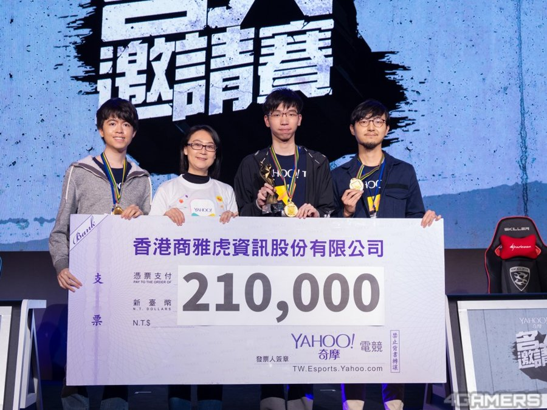
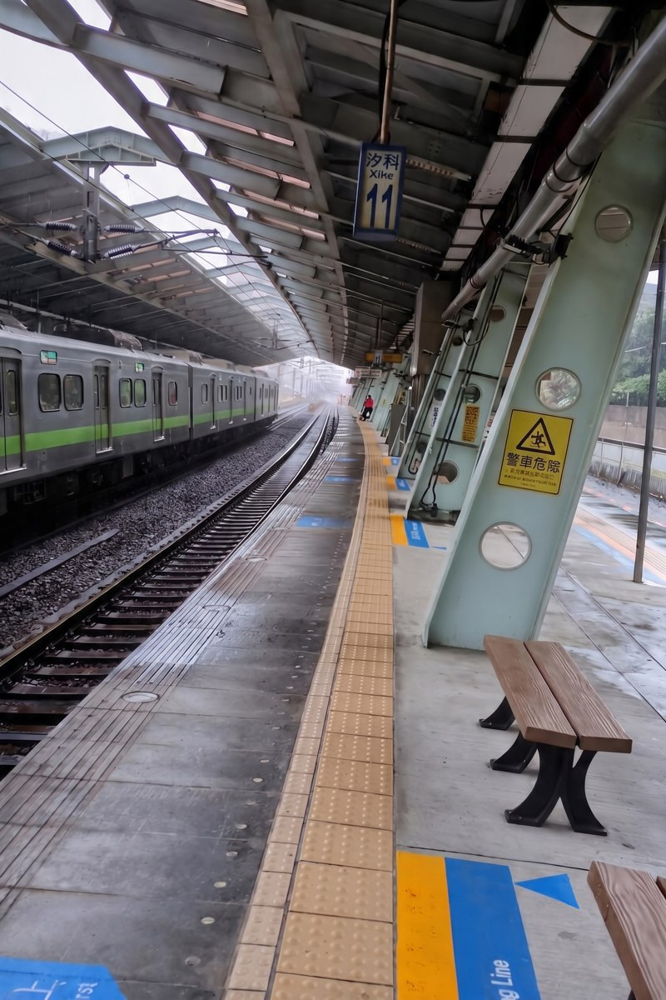
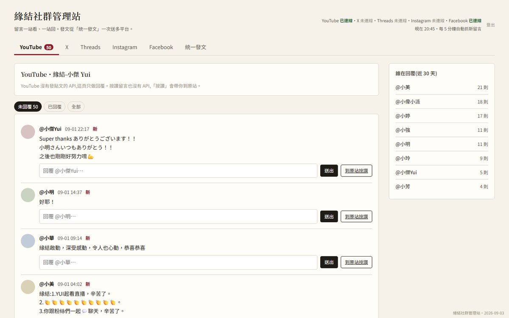
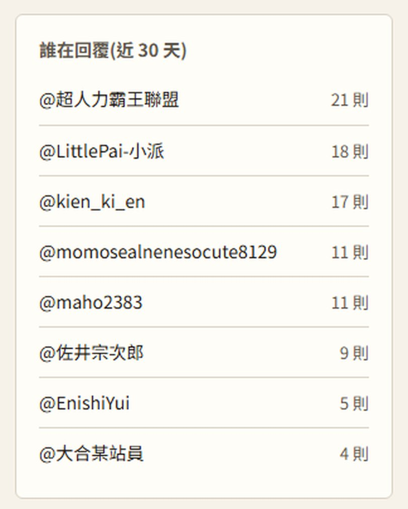

WELLEW STUDIOWelleW 影音製作工作室的首頁
◆ 作品精選（點圖進作品頁）
◆ 工作室資料
| 名稱 | WelleW |
|---|---|
| 負責人 | Welkin |
| 型態 | 一人影音製作工作室 |
| 經歷 | Yahoo 奇摩電競主編／魔方網遊戲編輯 |
| 業務 | 賽事與節目企劃／剪輯／3D 資訊動畫／特效合成／直播元件／社群系統／AI 剪輯工具／新聞稿 |
◆ 關於
我是 Welkin，WelleW 是我的一人工作室。做的範圍是節目企劃、剪輯、特效合成、直播元件、社群系統架設，以及自己寫的 AI 剪輯工具，需要協作時再依專案找人。
◆ 聯絡
| welkinhung7797@gmail.com | |
| LINE | welkinhung |
| ITCH.IO | GRAFFITI FIGHT ↗ |
★★★ 服務項目 ★★★
| 服務 | 內容 | 主要成績 |
|---|---|---|
| 賽事與社群活動 | 電競賽事、線下活動、24 小時直播企劃，從邀請到現場執行 | 花博 WirForce 主舞台；20 位名人同台；6 國跨國賽；單屆獎金 NT$30 萬 |
| VTuber 企劃與經營 | 角色定位、直播內容、社群經營；AI VTuber 從人設到推流 | 虎子 10.1 萬訂閱、Super Chat 累計 NT$523 萬、2025 台灣第 4 名 |
| 實況主與節目剪輯 | 實況長影音、Shorts、綜藝節目 | 總觀看 736 萬；10 萬以上 18 支；九孔康康篇 66 萬 |
| 3D 資訊動畫・合成 | 真實地形資料 3D 動畫、解說動畫、實拍合成 | 赤倉雪場 4K 60fps、41 個雪場標籤 |
| AI 剪輯工具 | 自製 AI 剪輯工作站，AI 自動鋪字卡、音效、特效 | 234 顆素材 25 秒落完 |
| 直播與社群系統 | 直播畫面元件、Discord 架設、多平台留言管理 | 5 平台留言收件匣；1,060 則留言實接 |
| 媒體編輯與新聞稿 | Yahoo 奇摩電競主編、國際採訪、新聞稿與專訪 | 帶領 5 人團隊；1,000+ 篇稿；100+ 場專訪 |
●賽事與社群活動
ESPORTS EVENTS & COMMUNITY ACTIVATIONS — YAHOO 奇摩電競
20 位名人選手同台
（WirForce 決賽）
（WirForce 決賽）
花博爭豔館 WirForce 2018
主舞台
主舞台
6 國跨國對抗
台港韓新泰菲
台港韓新泰菲
64 位日韓東南亞港澳選手
（第五屆絕地求生）
（第五屆絕地求生）
NT$30 萬單屆總獎金
（新生橋鐵籠賽）
（新生橋鐵籠賽）
24 小時不間斷直播
（名人爬梯 Party）
（名人爬梯 Party）
◆ 我的角色
任 Yahoo 奇摩電競主編期間，負責旗下自辦賽事與社群活動的企劃與專案統籌：選手與名人邀請、日港台三地協調、場地與贊助商對接、賽制設計、直播與現場執行。
◆ 活動成績
| 活動 | 時間 | 地點 | 規模／邀請 | 成績 |
|---|---|---|---|---|
| Yahoo《爐石戰記》名人邀請賽（首屆） | 2018.01 | 台北 | 8 位台灣名人選手 | Yahoo TV 首度自辦電競賽；總決賽超過百位粉絲到場，直播留言數成長近 6 倍；總獎金 NT$10 萬 |
| 《爐石戰記》名人爬梯 Party | 2018.04.14–15 | 24 小時線上直播 | Tom60229、薛喜、紹安、羅杰、Uzra、偷米 6 位名人分 3 隊 | 獎金 NT$10 萬；6 人一天內全數爬上傳說；精華影片 6.5 萬觀看；延續辦到第三屆（2019） |
| 新生橋鐵籠賽（第二屆名人邀請賽） | 2018.06.02–03 | 台北 新生高架橋下 鐵籠舞台 | 英雄聯盟／爐石戰記／快打旋風 V 三項 1v1；素人預選晉級挑戰名人 | 總獎金 NT$30 萬；冠軍 M17 Dee、FW Tom60229、RB |
| 名人邀請賽 線下決賽 | 2018.12.08 | 花博爭豔館 WirForce 2018 主舞台 | 20 位日港台名人選手（GamerBee、Tom60229、RB、羅杰…） | 台灣藍、紅兩隊迎戰香港 HGG 亞運金牌與日本選手聯軍；快打旋風 V＋爐石戰記雙項目 |
| 第五屆名人邀請賽 | 2019.06.20–07.20 | 跨國線上＋決賽 | 爐石：台灣 6 位選手對上港韓新泰菲隊伍；絕地求生：64 位選手雙排 | 爐石總獎金 US$15,000 |
現場與主視覺

◆ 報導來源
●VTuber 企劃與經營
VTUBER STRATEGY & AI VTUBER
虎子（何虎子 Torako Ho）｜Yahoo 旗下台灣 VTuber
10.1 萬YouTube 訂閱
NT$523 萬Super Chat 累計
第 4 名2025 台灣 Super Chat
年度排行（全頻道）
年度排行（全頻道）
第 8 名2024 台灣 Super Chat
年度排行（全頻道）
年度排行（全頻道）
第 3 名2024 台灣 VTuber
Super Chat 排行
Super Chat 排行
◆ 我的角色與成績
| 我的角色 | 品牌定位／直播內容企劃／社群經營 |
|---|---|
| 年度排行 | 2025 台灣全頻道 Super Chat 第 4 名（約 NT$223 萬）；2024 第 8 名（NT$164 萬）——連續 2 年台灣前 10 |
| VTuber 排行 | 2024 台灣 VTuber Super Chat 第 3 名（US$50,654） |
| 頻道 | YouTube「Torako Channel」↗ |
AI VTuber 親親子｜自製 AI 角色
1,270YouTube 訂閱
247 支影片＋Shorts
（61＋186）
（61＋186）
79 萬頻道總觀看
1.7 萬單支最高觀看
（和 VT 連動直播）
（和 VT 連動直播）
◆ 我的角色與成績
| 我的角色 | 角色企劃／立繪狀態機（14 種）／語音合成串接／跨平台推流／短影音經營 |
|---|---|
| 運作方式 | 操作員打一行字，親親子在直播間用自己的聲音講出來，立繪依情緒切換 |
| 觀看 | 長影音 61 支共 17.8 萬、Shorts 186 支共 61.5 萬觀看 |
| 頻道 | YouTube「AI親親子」↗｜觀看最高的直播 ↗ |
●實況主與節目剪輯
STREAMER & SHOW EDITING — RESULTS
736 萬剪輯作品總觀看
110 支長影音＋Shorts
18 支單支 10 萬觀看以上
95.5 萬單支最高觀看
◆ 各實況主／節目成績
| 實況主／節目 | 範圍 | 支數 | 總觀看 | 10 萬以上 | 最高 |
|---|---|---|---|---|---|
| 薛喜 天梯小旋風薛喜 ↗ | 2026.08.23–10.22 長影音＋Shorts | 44 | 347 萬 | 13 支 | 22 萬 |
| Eason 禿頭博士Eason ↗ | 【Eason】系列 Shorts | 61 | 183 萬 | 1 支 | 11.4 萬 |
| 九孔要變帥 九孔要變帥 ↗ | 康康篇（綜藝長片） | 1 | 66.1 萬 | 1 支 | 66.1 萬 |
| 其他剪輯 | 實況精華、腳本影片、Shorts | 4 | 139.5 萬 | 3 支 | 95.5 萬 |
觀看數為 2026.10.22 YouTube 頁面數字。
◆ 薛喜｜近兩個月觀看前幾名
| 類型 | 標題 | 上架 | 觀看 |
|---|---|---|---|
| Shorts | 特戰英豪 把手放在椅子上 擦桌子我懂 | 09.10 | 22.0 萬 |
| Shorts | 薛喜看歪逆說為什麼不噴他 | 10.06 | 20.6 萬 |
| Shorts | 虧皮龜狗第一次看到有人 WASD 可以按到手指打結 | 10.17 | 17.5 萬 |
| Shorts | 與熊哥哥霓虹的差別 還想教人 | 09.27 | 16.4 萬 |
| Shorts | 高雄孝子薛喜：不可以罵我媽 | 10.02 | 14.9 萬 |
| 長影音 | 龜狗、虧皮診斷出病因了！大清早手把手教薛喜怎按 WASD | 10.15 | 10.0 萬 |
| 長影音 | 有人跟我一樣用三根手指頭在玩嗎 | 09.19 | 9.3 萬 |
| 長影音 | 這一世我悟了！射擊遊戲原來不用這麼多按鍵 | 10.01 | 8.0 萬 |
近兩個月 Shorts 34 支共 286 萬觀看（10 萬以上 12 支）；長影音 10 支共 61 萬觀看。
◆ Eason｜【Eason】Shorts 觀看前三名
| 標題 | 上架 | 觀看 |
|---|---|---|
| 向子午計畫，開戰！ | 2026.05.22 | 11.4 萬 |
| 遊戲橘子所有單位都是羅傑的人 你怎麼和他鬥？ | 2026.08.22 | 9.1 萬 |
| 羅傑說麻將打十塊二十塊不如去旁邊跳舞 | 2026.05.06 | 7.7 萬 |
【Eason】系列 Shorts 61 支共 183 萬觀看，5 萬以上 12 支。
◆ 九孔要變帥｜康康篇
| 標題 | 康康的幹話，九孔真的扛不住... |
|---|---|
| 成績 | 66.1 萬觀看・4,439 讚・196 則留言 |
| 頻道排名 | 「九孔要變帥」頻道 13 支長影音中觀看第 1（第 2 名 34.1 萬） |
| 上架 | 2026.09.03・20 分 33 秒 |
◆ 其他剪輯作品
| 作品 | 類型 | 觀看 |
|---|---|---|
| 實況精華剪輯 | 16:9 | 95.5 萬 |
| 腳本規劃影片 | 16:9 | 26.3 萬 |
| Shorts | 9:16 | 11.0 萬 |
| Shorts | 9:16 | 6.7 萬 |
●3D 資訊動畫・合成
3D DATA VISUALIZATION & COMPOSITING
4K 60fps成片規格
41 個雪場標籤
（真實座標）
（真實座標）
7 段3D 地形與解說動畫
◆ 赤倉觀光雪場（日本新潟）資訊動畫
| 內容 | 全日本俯瞰／雪場簡介連續地形飛行／衛星實景山體／交通比較地圖／跳台與滾坡飛行軌跡解說 |
|---|---|
| 資料 | 真實座標與高程、衛星影像、路線考據 |
| 我的角色 | 資料整理／3D 地形與鏡頭設計／動畫製作 |
◆ 虛實整合合成｜汐科站月台
實拍月台照片當底，合成虛擬角色與進站列車。拉中間的線比對前後。

← 合成後實拍原始 →
●AI 剪輯工作站 GAKEY
AI EDITING WORKSTATION
234 顆字卡／音效／特效
由 AI 自動鋪上
由 AI 自動鋪上
29 顆人工鎖定修改
25 秒AI 落完全部素材
20 分鐘一集節目的素材量
◆ 說明
自製剪輯軟體。貼一條直播連結進去，影片、聊天室與逐字稿一起抓回來；人挑段，AI 照規則把字卡、音效與特效落到多軌時間軸上，每一顆都能拖、能改字、能重生，一鍵出片。
●直播與社群系統
LIVE OVERLAYS / DISCORD / COMMUNITY OPS
5 平台留言收進同一個收件匣
1,060 則YouTube 留言實接
5 種客製直播元件
7 項Discord 架設服務
◆ 項目
| 社群管理站 | YouTube、X、Threads、Instagram、Facebook 留言一站看、一站回；未回覆優先、回覆者排行、統一發文、邀請制登入 |
|---|---|
| 直播元件 | 聊天室留言疊圖／即時投票／斗內目標進度條／洗版留言→HYPE 計數／斗內跑馬燈 |
| Discord | 身分組與權限架構／頻道結構／留言互動指令／表情機器人／掛機養成遊戲／精華時間軸整合／Webhook 自動化 |


●媒體編輯與新聞稿
MEDIA & PRESS
5 人帶領 Yahoo 奇摩電競
編輯團隊
編輯團隊
1,000+ 篇新聞稿／公關稿
100+ 場專訪
3,078 萬Yahoo 奇摩電競平台
上線以來觀看（2017.07）
上線以來觀看（2017.07）
4 大國際現場採訪
◆ 經歷與成績
| Yahoo 奇摩電競 主編 | 2016.12–2021。帶領 5 人編輯團隊：內容策略、任務分配、品質把關；從零建立電競社群平台，平台上線後觀看 3,078 萬次、觸及 311 萬人（2017.07 發表數據）；2019 亞洲電競大賞入圍「年度最佳電競報導獎」 |
|---|---|
| 國際採訪 | 美國 GDC 遊戲開發者大會、Valve（Steam）總部、東京電玩展 TGS、英雄聯盟世界賽 |
| 魔方網記者／蕃薯藤影音編輯 | 2013–2016。遊戲產業報導、影音內容產製 |
| 撰稿實績 | 新聞稿／公關稿 1,000+ 篇、專訪 100+ 場；活動通稿、專訪與品牌敘事 |
●聯絡我
CONTACT
◆ 有任何想法都歡迎聊聊
| welkinhung7797@gmail.com | |
| LINE | welkinhung |
| ITCH.IO | GRAFFITI FIGHT ↗ |